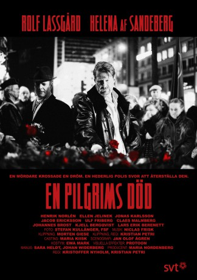
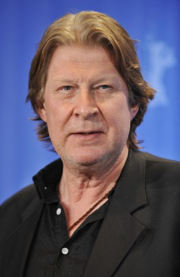
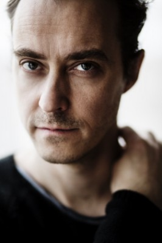
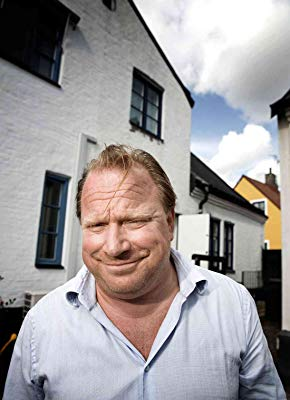
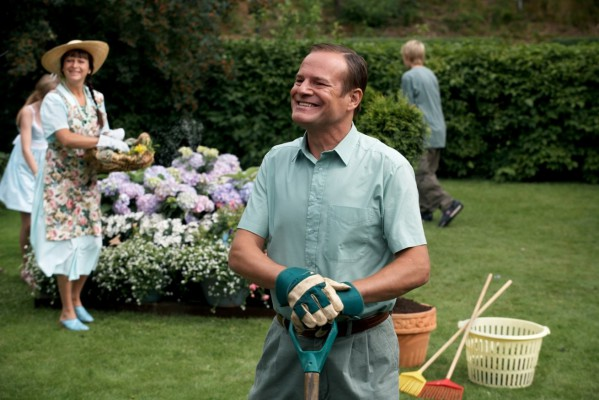
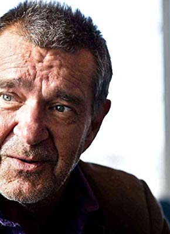
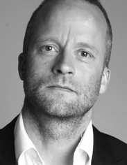
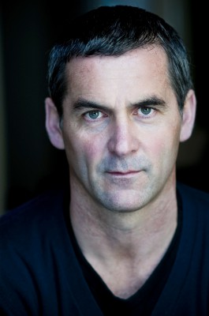

 
 IMDB-Wertung: 7.0 / 10
IMDB-Wertung: 7.0 / 10  Metascore: 0
Metascore: 0 
1986 wird der schwedische Ministerpräsident Olof Palme in Stockholm auf dem Heimweg vom Kino auf offener Straße erschossen. Der Täter kann jedoch nie gefunden werden, der Mord bleibt ungeklärt. 20 Jahre später will der Chef der schwedischen Kriminalpolizei Lars Martin Johansson den Fall erneut aufrollen. Tatsächlich wurden in der Vergangenheit entscheidende Spuren nicht verfolgt.
Jahr: 2013
Dauer: 58 Minuten
FSK:
Land: Schweden Studio: Sky Atlantic HDTonspuren: DD2.0 - ,
Untertitel:
Auflösung: 720p (1280x544) Größe: 1054 MB
Genre: Thriller, Drama, TV-Serie
Regisseur: Kristoffer Nyholm, Kristian Petri
Drehbuch: Sara Heldt, Leif G.W. Persson, Johan Widerberg
Soundtrack:
Darsteller:
-  Rolf Lassgård als Lars Martin Johansson, 4 episodes, 2013
- Helena Af Sandeberg als Eriksson, 4 episodes, 2013
-  Jonas Karlsson als Waltin, 4 episodes, 2013
- Henrik Norlén als Lewin, 4 episodes, 2013
-  Claes Malmberg als Bäckström, 4 episodes, 2013
-  Jacob Ericksson als Nilsson, 3 episodes, 2013
- Johannes Brost als Persson, 3 episodes, 2013
-  Kjell Bergqvist als Berg, 3 episodes, 2013
- Lars-Erik Berenett als Forselius, 3 episodes, 2013
- Per Svensson als Jarnebring, 3 episodes, 2013
- Göran Ragnerstam als G:son Henning, 3 episodes, 2013
- Johan Hedenberg als Berg Jr, 2 episodes, 2013
- Petra Nielsen als Gertrud, 2 episodes, 2013
- Ia Langhammer als LMJs sekreterare, 2 episodes, 2013
- Christer Fant als Söderström, 2 episodes, 2013
-  Jimmy Lindström als Flykt, 1 episode, 2013
- Tobias Aspelin als Pressansvarig, 1 episode, 2013
- Anna Hedenmo als Anna Hedenmo, 1 episode, 2013
- Katarina Weidhagen van Hal als Linda Mattei, 1 episode, 2013
- Ellen Jelinek als Mattei, 4 episodes, 2013
- Anders Johannisson als Wijnbladh, 4 episodes, 2013
- Ulf Friberg als Hedberg, 3 episodes, 2013
- Ashley McKinney Taylor als Sarah Weissman, 3 episodes, 2013
- Scott Ackerman als Krassner, 2 episodes, 2013
-  Nigel Whitmey als CIA chef, 2 episodes, 2013
- Lena B. Eriksson als Pia Hedin, 2 episodes, 2013
- Antti Reini als Kriminaltekniker, 1 episode, 2013
- Catherine Hansson als Bergs sekreterare, 1 episode, 2013
- Sofia Rönnegård als Överåklagare, 1 episode, 2013
- William Wahlstedt als Daniel M'Boye, 1 episode, 2013
- David Mjönes als Direktör, 1 episode, 2013
- Björn Wahlberg als Göransson, 1 episode, 2013
- Stefan Isaksson als Chefredaktör, 1 episode, 2013
- David Rangborg als Martinsson, 1 episode, 2013
- Bengt C.W. Carlsson als Vindeln, 1 episode, 2013
- Viking Almquist als Musiker (uncredited), 1 episode, 2013
- Linnéa Johansson als Tågpassagerare (uncredited), 1 episode, 2013
- Rolf Nilsson als Luffare (uncredited), 1 episode, 2013
- Berit Tidblad als Tågpassagerare (uncredited), 1 episode, 2013
Datei: X:\HD-Serien\Fall des Wohlfahrtsstaates\1 Tod eines Pilgers\Tod eines Pilgers E01.mkv seit 03.04.2019
Festplatte: HD Serien(A-H)
 Es gibt insgesamt 182 Filme in der Gruppe 'HD-Serien'
Es gibt insgesamt 182 Filme in der Gruppe 'HD-Serien'
")